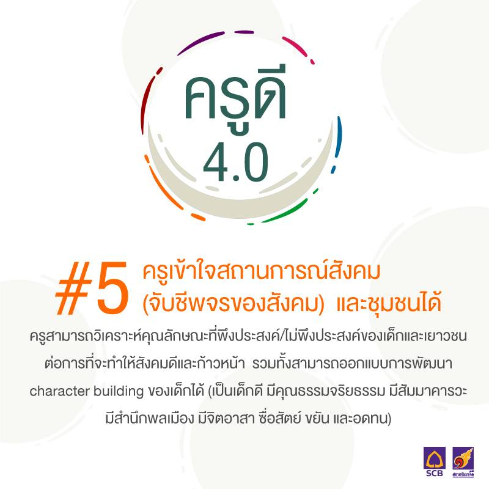

ข้อมูล
มีทัศนคติที่เปิดกว้างและพร้อมเรียนรู้สิ่งใหม่: คุณครูต้องไม่ยึดติดกับวิธีการสอนแบบเดิม ๆ แต่ต้องพร้อมที่จะเรียนรู้เทคโนโลยีใหม่ ๆ และนำมาปรับใช้กับการเรียนการสอน เพื่อให้นักเรียนเข้าใจเนื้อหาได้ง่ายและทันสมัย/p>
มีทัศนคติที่เปิดกว้างและพร้อมเรียนรู้สิ่งใหม่: คุณครูต้องไม่ยึดติดกับวิธีการสอนแบบเดิม ๆ แต่ต้องพร้อมที่จะเรียนรู้เทคโนโลยีใหม่ ๆ และนำมาปรับใช้กับการเรียนการสอน เพื่อให้นักเรียนเข้าใจเนื้อหาได้ง่ายและทันสมัย/p>